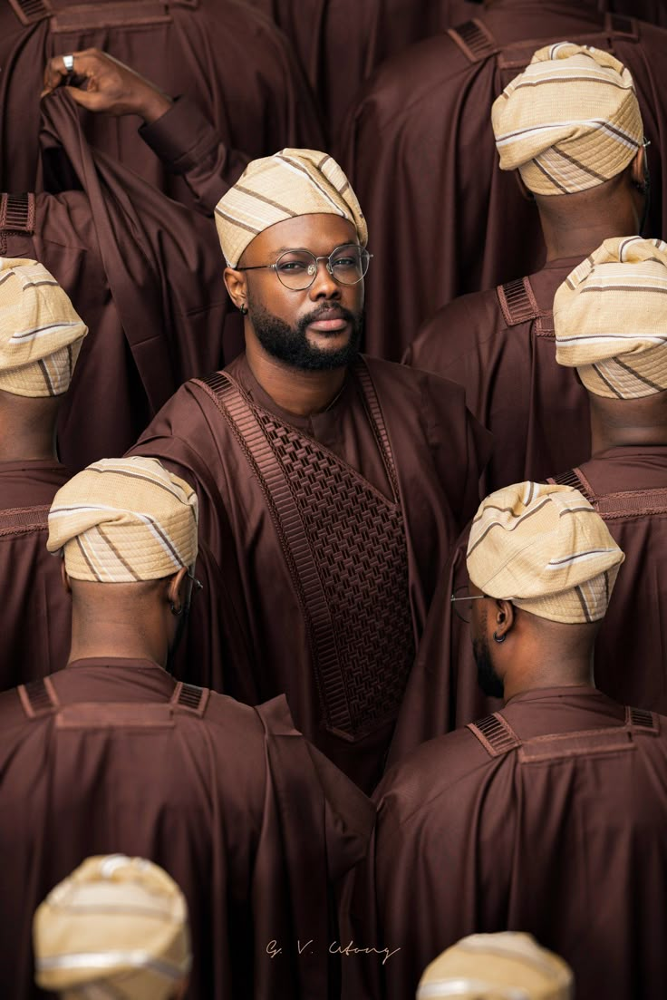
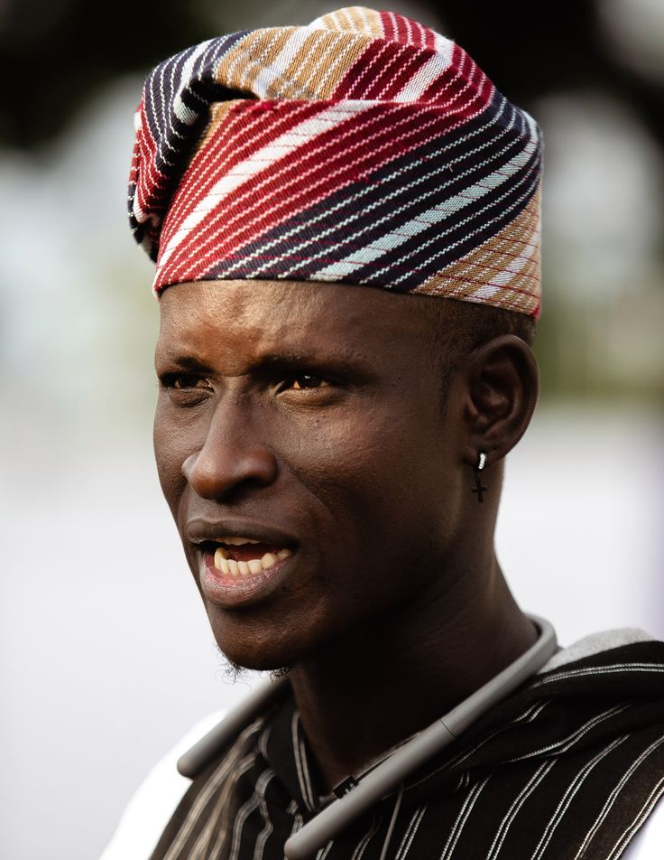
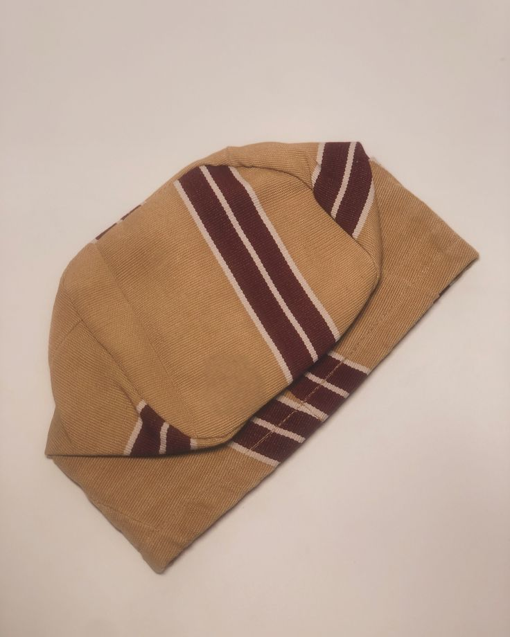
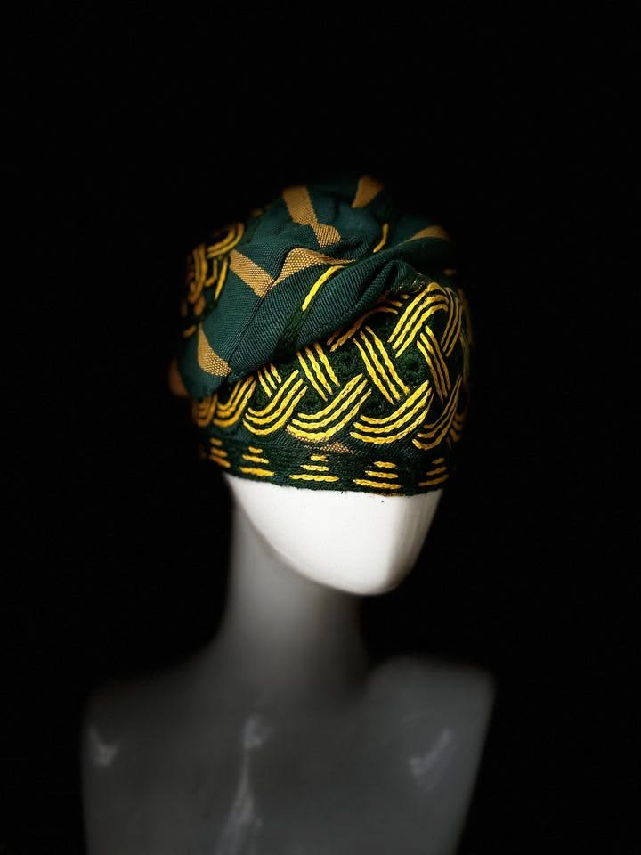
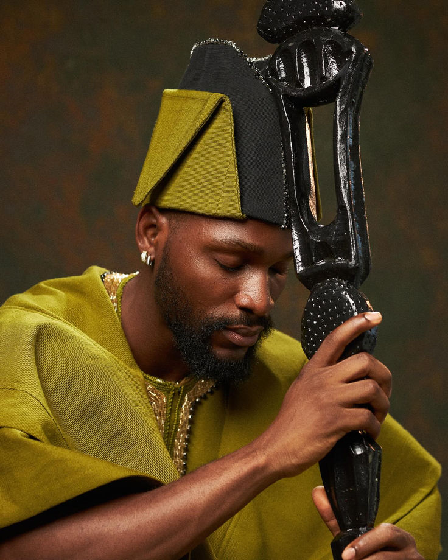
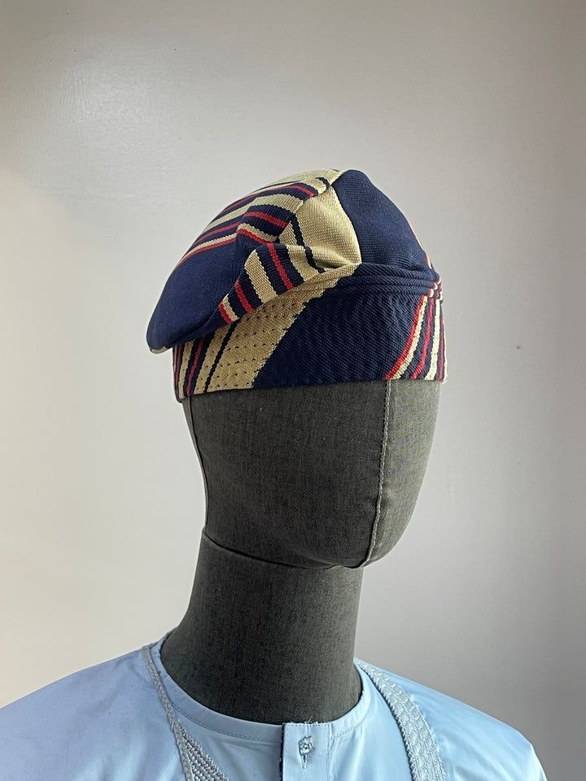
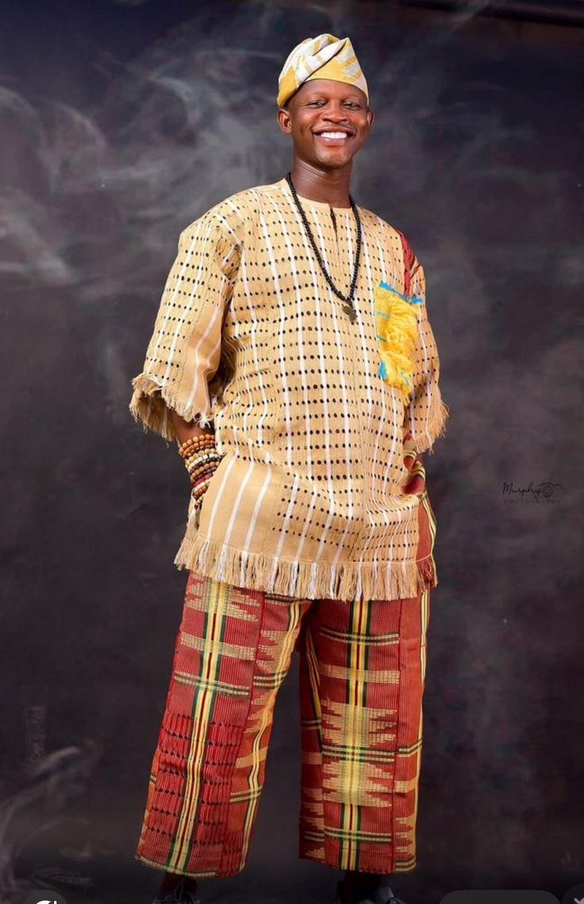

— Where Culture Meets Craftsmanship —
Every fìlà carries centuries of Yoruba identity. Woven by master artisans using ancestral techniques, each cap is a living piece of culture — worn with pride at every occasion.

In Yoruba culture, a fìlà has never been just a cap. It is a mark of identity, lineage, and dignity. Chiefs, elders, and fathers have worn it at every moment of significance — from the naming ceremony to the throne room.
At FÌLÀ, we carry this legacy forward — working with master weavers and dyers in Ìbàdàn, Ọ̀yọ́, and Ẹ̀gbá to produce caps that honour the past while dressing the present.



Six authentic Yoruba cap styles — each with its own story, occasion, and soul

Most PopularThe most iconic of all Yoruba caps — signature drooping sides that frame the face in distinguished elegance. Woven from aso-oke in traditional patterns.
The round, soft cap beloved across Yorubaland for daily wear. Light, comfortable, and deeply cultural — available in rich àdìrẹ́ and aso-oke weaves.
Tall, slim and proud — the Tínkó rises to a commanding point. Favoured by traditional rulers and chiefs for ceremonies and royal occasions.

Artisan DyedHand-resist-dyed in authentic deep indigo and white patterns. Each àdìrẹ́ cap carries symbolic meaning rooted in Yoruba art and centuries of tradition.

PremiumHandwoven on the traditional strip loom in Ìṣẹ̀yìn — birthplace of Yoruba aso-oke weaving. Gold, saffron, and terracotta threads in royal splendour.
Every cap from FÌLÀ is a labour of skill, patience, and cultural memory. Our artisans spend days — sometimes weeks — on a single piece.
"I bought the Fìlà Abẹ́tí-ajá for my father's 70th birthday. He was moved to tears — said it reminded him of his own father. The craftsmanship is extraordinary."
"I ordered the Tínkó for my chieftaincy ceremony and everyone couldn't stop asking where I got it. FÌLÀ is the real deal — authentic, beautiful, and prompt delivery to Abuja."
"The Àdìrẹ́ cap I ordered for my husband's birthday arrived perfectly packaged. The pattern is stunning and uniquely Yoruba. We will always order from FÌLÀ."
Message us on WhatsApp — we'll guide you to the perfect cap